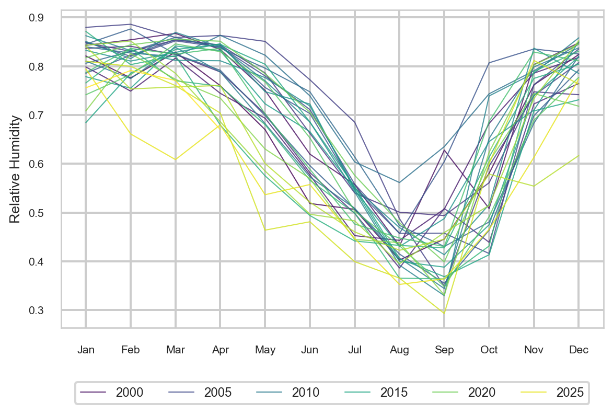
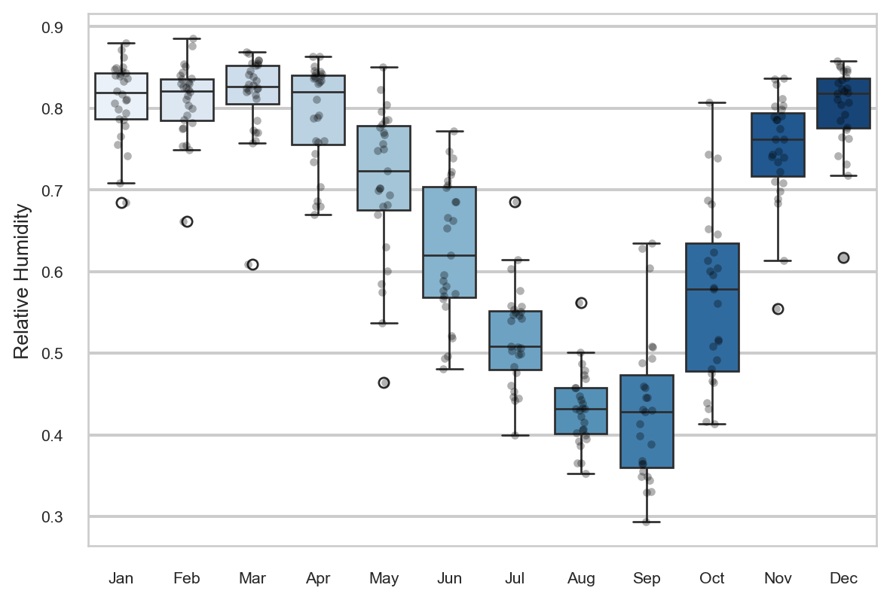
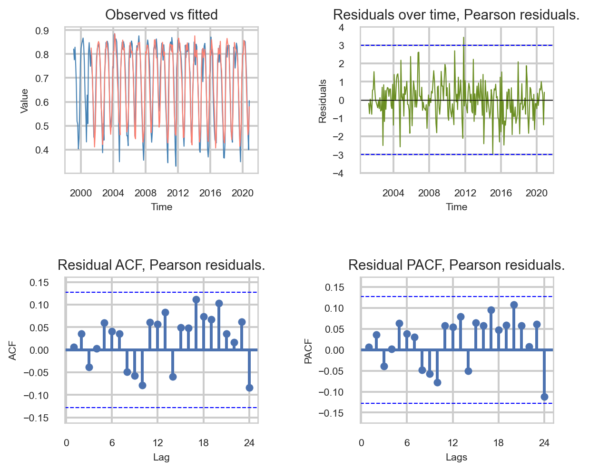
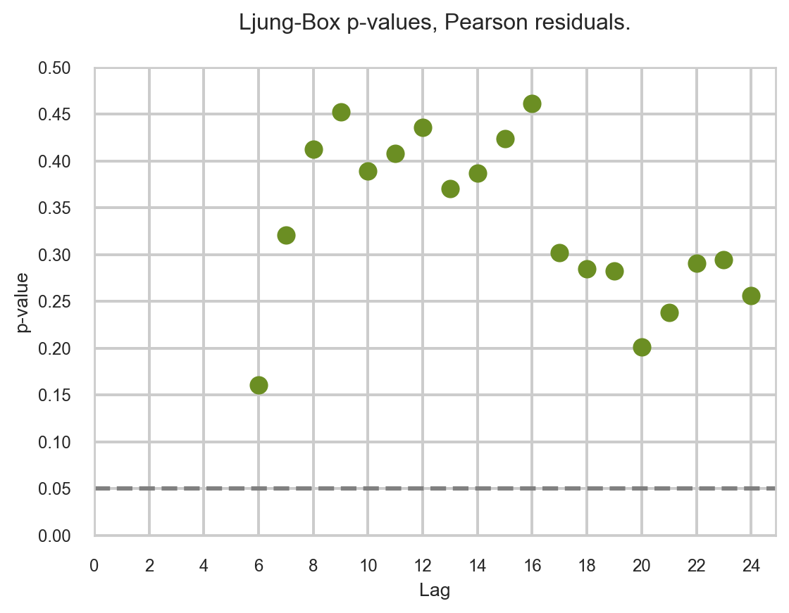
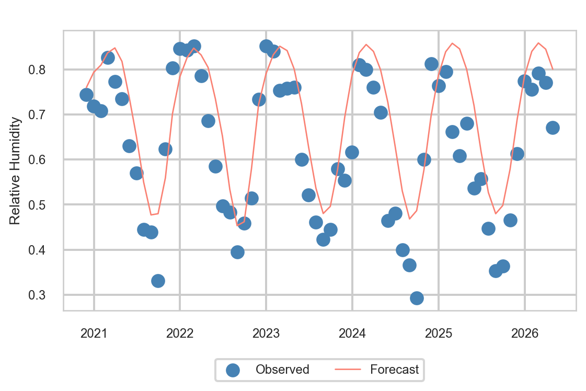
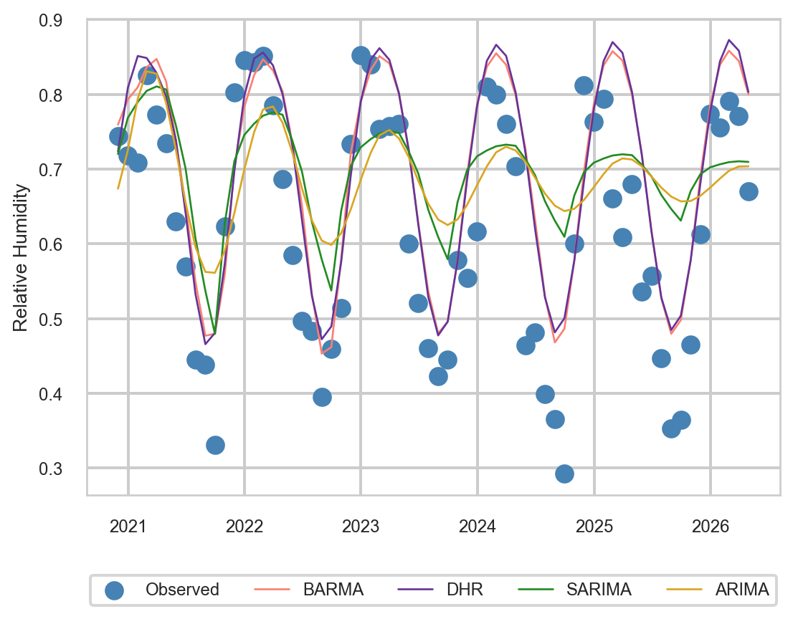

This report documents BARMA-Python, a Python implementation of the Beta Autoregressive Moving Average (\(\beta\)ARMA) model for time series bounded in (0, 1). The methodology was originally proposed by Rocha & Cribari-Neto (2009) and is currently available in R via the betaARMA package on CRAN, developed by Everton da Costa, Francisco Cribari-Neto, and Vinicius Tavares Scher (Universidade Federal de Pernambuco). This Python port reproduces the package’s core estimation routines and validates them against the R reference to machine precision.
The motivation for porting the methodology to Python is twofold: first, to make \(\beta\)ARMA accessible to the broader Python statistical and machine learning ecosystem; and second, to enable future comparisons of computational performance, numerical stability, and convergence behavior between R and Python implementations. In our recent work on ridge penalization (Cribari-Neto, Costa, and Fonseca, 2025), we observed that parameter estimates can be adversely affected by the flatness of the log-likelihood curvature, leading to a significant number of convergence failures. Whether Python’s optimization routines (e.g., scipy.optimize.minimize) reduce this convergence failure rate compared to R’s optim function remains an open question and a target of future work.
2 Time Series: Relative humidity in Brasília
2.1 Load the time series
The full monthly series spans from January 1999 to the present and was fetched from the NASA POWER API via fetch_humidity_brasilia.py. Values are expressed as proportions in \((0,1)\).
We split the data set, using 80% to training the model and 20% to test the accuracy of the predictions.
The train data start in 1999-01-31 00:00:00 and goes to
2020-10-31 00:00:00.
The length of train data is 262.
The test data start in 2020-11-30 00:00:00 and goes to
2026-04-30 00:00:00.
The length of test data is 66.
2.2 Descriptive analysis
The excess of kurtosis is: -1.0617.
The skewness value is: -0.5682.
Table 1: Descriptive statistics for monthly relative humidity in Brasília, 1999–2026 (\(n = 328\)). Excess kurtosis is \(-1.06\) and skewness is \(-0.57\), indicating a mildly left-skewed, platykurtic distribution consistent with a bounded seasonal series.
count
mean
std
min
25%
50%
75%
max
y
328.0
0.6737
0.1602
0.2932
0.5328
0.7344
0.817
0.8861
2.3 Seasonality
The seasonal line plot below shows the monthly humidity trajectory for each year, revealing a consistent dry season (June-September) and wet season (November-March).

Figure 1: Annual overlays of monthly relative humidity, 1999–2026. The plot reveals a strong seasonal cycle with peak humidity during the wet season (November–March) and a pronounced dry season (June–September).
The box plot below summarizes the within-month variability, confirming the strong seasonal signal and highlighting outlier years.

Figure 2: Monthly distribution of relative humidity. Box plots confirm a strong seasonal signal, with the lowest medians in August and September. This cyclical pattern motivates the inclusion of harmonic regressors in the model.
2.4 Harmonic Regressors
In the previous section we demonstrated the presence of strong seasonality presence in the data. To account for the annual seasonal cycle, we include two harmonic regressors, a sine and cosine term with period 12 months.
The shape of the X_train matrix is: (262, 2)
The shape of the X_test matrix is: (66, 2)
3\(\beta\)ARMA Model
To align with the approach used in the R package (Costa, Cribari-Neto and Scher, 2026), we are using the response variable in the predictor scale. Additionally, following the authors’ recommendation, we will use Pearson residuals in the Residuals Analysis.
3.1 Model Specification
When the seasonality is strong, even harmonic regressors might not be sufficient. In this case, an option provided by the \(\beta\)ARMA models consists of using a specific range of lags during model selection.
For example, we started with the \(\beta\)AR model without an MA component and computed the estimates starting from lag 1 up to 36 to verify the presence of seasonality over a 3-year period; after this, we did it again for the pure \(\beta\)MA models. We consolidated these values into a table and added the estimates of the \(\beta\)ARMA model using only the intercept and the precision estimate, without AR or MA terms. The target was the minimal BIC (the AIC yielded coinciding results for this procedure).
We applied this method for each component we added to the model until we had three finalists. The model with the smallest BIC was the \(\beta\)ARMA model with AR lags at positions 1, 21, 24, and MA at 1 and 26, using the logit link function. The stopping criterion for this procedure was the presence of white noise in the residuals. Once achieved, we stopped the search.
3.2 Fitted Model
We first define the AR and MA components of the \(\beta\)ARMA model following the procedure described in the previous section, along with the logit link function.
ar = [1, 21, 24]ma = [1, 26]link ="logit"
Next, we instantiate the BARMA model object. We pass the training data, the defined lags, and the matrix of exogenous harmonic regressors defined previously in Section 2.4.
With the model structure defined, we estimate the parameters using the .fit() method.
barma_fit = barma_model.fit()
We can confirm the optimizer’s convergence via the .converged attribute:
print(f"Converged: {barma_fit.converged}")
Converged: True
The model summary can be observed with the .summary() method.
Table 2: Estimated coefficients, standard errors, z-values, and p-values for the \(\beta\)ARMA model: autoregressive terms (\(\varphi\)), moving average terms (\(\theta\)), harmonic regressors (\(\beta\)), intercept (\(\alpha\)), and precision (\(\phi\)). All parameters are significant at the 5% level. AIC and BIC are reported below the table.
Estimate
Std. Error
z value
Pr(>|z|)
alpha
0.598980
0.109690
5.460655
4.743811e-08
varphi1
0.310446
0.095389
3.254531
1.135799e-03
varphi21
-0.209811
0.055167
-3.803170
1.428563e-04
varphi24
0.207745
0.057058
3.640925
2.716599e-04
theta1
0.256996
0.104479
2.459773
1.390250e-02
theta26
-0.162686
0.068925
-2.360322
1.825909e-02
beta1
0.860752
0.048161
17.872319
0.000000e+00
beta2
0.399676
0.046551
8.585711
0.000000e+00
phi
64.147535
5.871704
10.924858
0.000000e+00
The AIC, BIC values can be retrieved using the .aic and .bic attributes, respectively.
Using the estimates of the model obtained in the previous section, we can proceed with the residual analysis.
Some plots can be very helpful in this fundamental part. We can access some diagnostic plots using the .plot_diagnostics() method.
In the following figure, we can see four plots. In the Observed vs fitted panel, we can see a very good alignment between the model predictions and the observed values. In the Residuals over time plot, we include a \(\pm3\) band. Because the residuals do not follow a normal distribution, we use an ad hoc recommendation provided by the authors. More details about this can be found in (Rocha and Cribari-Neto, 2009). In this plot, one value (December 2011) falls slightly outside the band. Two very important plots to examine are the Residual ACF and Residual PACF; in these plots, we can see that no values fall outside the confidence bands.

Figure 3: Four-panel residual diagnostics: observed vs. fitted values, Pearson residuals over time (with ±3 reference bands), residual ACF, and residual PACF. Residuals center around zero, and no ACF or PACF spike exceeds the confidence bounds — consistent with the model having captured the temporal dependence.
With the conclusions presented in the figure above, we have a strong indication of white noise in the residuals. To confirm that, we could execute the Ljung-Box test. To do that, we can use the method .plot_ljungbox().
In the Ljung-Box p-values plot, we can see the lags starting from 6 until 24. The lower bound is the number of AR and MA parameters plus one (3 + 2 + 1 = 6), and the upper bound covers two full annual cycles. All p-values are greater than 0.05, meaning we do not reject the null hypothesis of white noise residuals.

Figure 4: Ljung–Box test for residual autocorrelation. P-values for the Pearson residuals at lags 6–24 all lie above the 0.05 threshold (dashed line), so the null hypothesis of no residual autocorrelation is not rejected. The result supports the adequacy of the \(\beta\)ARMA specification.
Therefore, based on both the visual plot analysis and the statistical test p-values, we conclude that the residuals behave as white noise. Consequently, we can confidently trust the inferences drawn using the model’s estimates.
Therefore, the forecast plot can be accessed by the .plot_forecast() method, using y_test to check prediction alignment and exog matrix for prediction.

Figure 5: Out-of-sample \(\beta\)ARMA forecast (solid line) against observed relative humidity (points) over the 66-month test window. Predictions track the seasonal cycle and remain within the valid \((0,1)\) range by construction, a guarantee ARIMA-family models do not provide.
4 Baseline Models
Now, we evaluate the accuracy of the forecasts using the \(\beta\)ARMA model, following the model selection and evaluation procedure of Costa, Cribari-Neto and Scher (2024). We reserved 20% of the dataset (66 observations, roughly 5.5 years) for the test set. Forecast accuracy is evaluated using MAE and RMSE; the non-seasonal and seasonal integration orders are set to \(d=D=0\) since the response is bounded in \((0,1)\).
We consider traditional forecast strategies to benchmark the forecast from the \(\beta\)ARMA model. Specifically, we use SARIMA (seasonal autoregressive integrated moving average) with \(s=12\) because we have monthly data; and DHR (Dynamic Harmonic Regressors), using the same harmonic regressors as the \(\beta\)ARMA model (sine and cosine). To verify the impact of the seasonality in the model, we also use an ARIMA model without any seasonal component or harmonic regressor.
In the three baseline models, we set the degree of differencing to zero and use the function auto_arima() from the pmdarima package. In the next three code chunks, you can see the code used for each model.
In Table 3, we have the MAEs and RMSEs (x100) of the \(\beta\)ARMA forecast together with DHR \((\text{order}: (2,0,3))\), SARIMA \((\text{order}: (1,0,0)(1,0,0)_{12})\) and ARIMA \((\text{order}: (2,0,3))\) models.
The Ljung–Box portmanteau tests do not show evidence of DHR, SARIMA or ARIMA misspecification at the usual significance levels.
We can note that seasonality is strong in the dataset and the model must deal with it. The ARIMA model yielded the highest errors among the 4 forecast models. The SARIMA model provided an improvement when compared to the ARIMA model, but remains distant from the two other models. \(\beta\)ARMA outperforms DHR and achieves the best results among the 4 forecast models. It is important to note that the \(\beta\)ARMA and DHR predictions are very competitive, but in the structure of the \(\beta\)ARMA model we can always be sure that the predictions and the fitted values stay in the interval \((0,1)\). We do not have this guarantee with the other three models. For readers interested in seeing a full comparison between the models, we invite them to read (Costa, Cribari-Neto and Scher, 2024).
Table 3: Forecast accuracy on the 66-month test set. MAE and RMSE are reported on the \((0,1)\) scale, multiplied by 100 for readability. \(\beta\)ARMA achieves the lowest error on both metrics.
Model
MAE (%)
RMSE (%)
1
BARMA
8.73
10.39
2
DHR
8.90
10.57
3
SARIMA
11.22
13.52
4
ARIMA
11.88
14.38
In addition to the table results, we also have Figure 6. In this figure, we can see observed values as points and the forecasts of each model as lines. The degradation of the predictions from the ARIMA and SARIMA models over time is notable. Also notable is the close competition between the \(\beta\)ARMA and DHR models, sometimes resulting in the overlapping of the lines.

Figure 6: Out-of-sample forecast comparison across the four models. Visually, \(\beta\)ARMA and DHR track the seasonal cycle closely, while SARIMA and ARIMA collapse toward the mean of the training set.
6 Conclusion
In this work, we successfully imported the main functionalities of the \(\beta\)ARMA model from the R package (Costa, Cribari-Neto and Scher, 2026) into Python. Backed by unit tests via pytest, we presented the initial version of a future Python package. We demonstrated these functionalities using a real-world dataset of relative humidity in Brasilia, Brazil. The report provides not only the model fitting process, but also the evaluation of predictions and residuals using ACF, PACF and Ljung-Box tests for lags 6 through 24.
We also benchmarked our implementation against DHR, SARIMA, and ARIMA approaches using the pmdarima package. Evaluating the MAE, RMSE, and the residual diagnostics made the advantage of the \(\beta\)ARMA model clearly evident: it yielded white noise residuals, and error metrics that were highly competitive, or superior, to the traditional baselines.
For the sake of brevity, the full comparison was not the primary target of this report; rather our goal was to showcase the packages’s functionality and practical application with the Python ecosystem.
For readers seeking a deeper dive into theoretical and practical advantages of this methodology, we invite you to read our publication in the Journal of Hydrology (Costa, Cribari-Neto and Scher, 2024). In that paper we provide a comprehensive comparative analysis exploring the full advantages of \(\beta\)ARMA model. Specifically, we modeled the useful volume proportion of three distinct water reservoirs in the São Francisco River basin, a critical water source for Brazil’s northeast region. The paper highlights crucial theoretical guarantees, such as the fact that the \(\beta\)ARMA model inherently restricts fitted and predicted values to the strictly valid (0,1) interval, a property not guaranteed by ARIMA-family approaches.
7 Future works
We successfully achieved the first goal in this project, which was to make the \(\beta\)ARMA model accessible to the broader Python statistical and machine learning ecosystem. Due to time constraints and the extensive scope of this work, we will defer questions regarding computational performance and numerical stability to future work. The computationally intensive simulation studies required for this analysis will be conducted in the next phase.
References
Costa, E., Cribari-Neto, F. and Scher, V.T. (2024) “Test inferences and link function selection in dynamic beta modeling of seasonal hydro-environmental time series with temporary abnormal regimes,”Journal of Hydrology, 638, p. 131489. Available at: https://doi.org/10.1016/j.jhydrol.2024.131489.
Rocha, A.V. and Cribari-Neto, F. (2009) “Beta autoregressive moving average models,”TEST, 18(3), pp. 529–545. Available at: https://doi.org/10.1007/s11749-008-0112-z.
Source Code
---title: "BARMA-Python: Modeling Relative Humidity in Brasília with the $β$ARMA Model"author: "Everton da Costa"date: todaybibliography: references.bibcsl: https://raw.githubusercontent.com/citation-style-language/styles/master/harvard-cite-them-right.cslformat: html: theme: flatly toc: true toc-location: left toc-depth: 3 code-fold: false code-tools: true df-print: paged pdf: toc: truenumber-sections: true---```{python}#| label: setup#| include: falseimport pandas as pdimport numpy as npimport seaborn as sns import matplotlib.pyplot as pltfrom scipy.stats import skew, kurtosisfrom pathlib import Pathfrom src.model import BARMA# ACF and PACFfrom statsmodels.graphics.tsaplots import plot_acf, plot_pacffrom pmdarima.arima import auto_arimafrom statsmodels.tsa.stattools import acf, pacfsns.set_theme( style="whitegrid", context="talk", rc={"axes.titlesize": 12,"axes.labelsize": 10,"axes.linewidth": 1.0,"xtick.labelsize": 9,"ytick.labelsize": 9,"legend.fontsize": 9,"figure.figsize": (6.5, 4.5) })```# IntroductionThis report documents BARMA-Python, a Python implementation of theBeta Autoregressive Moving Average ($\beta$ARMA) model for time seriesbounded in (0, 1). The methodology was originally proposed by Rocha &Cribari-Neto (2009) and is currently available in R via the `betaARMA`package on CRAN, developed by Everton da Costa, Francisco Cribari-Neto,and Vinicius Tavares Scher (Universidade Federal de Pernambuco). ThisPython port reproduces the package's core estimation routines and validatesthem against the R reference to machine precision.The motivation for porting the methodology to Python is twofold:first, to make $\beta$ARMA accessible to the broader Python statisticaland machine learning ecosystem; and second, to enable future comparisonsof computational performance, numerical stability, and convergencebehavior between R and Python implementations. In our recent work onridge penalization (Cribari-Neto, Costa, and Fonseca, 2025), we observedthat parameter estimates can be adversely affected by the flatness ofthe log-likelihood curvature, leading to a significant number ofconvergence failures. Whether Python's optimization routines (e.g.,`scipy.optimize.minimize`) reduce this convergence failure rate comparedto R's `optim` function remains an open question and a target of futurework.# Time Series: Relative humidity in Brasília## Load the time seriesThe full monthly series spans from January 1999 to the present and was fetched from theNASA POWER API via `fetch_humidity_brasilia.py`. Values are expressed as proportionsin $(0,1)$.```{python}PROCESSED_DIR = Path("data/processed")y_full: pd.Series = pd.read_csv( PROCESSED_DIR /"y_full_monthly_data.csv", index_col="Month", parse_dates=["Month"],).squeeze("columns")y_full.name ="y"y_full.index.freq = pd.infer_freq(y_full.index)display(y_full)```We split the data set, using 80% to training the model and 20\% to test the accuracy of the predictions. ```{python}#| label: split_data#| include: true#| echo: false# split the data set with 80% for train and 20% for testsplit_index =int(len(y_full) *0.8)y_train = y_full.iloc[:split_index]y_test = y_full.iloc[split_index:]print(f"The train data start in {y_train.index[0]} and goes to")print(f"{y_train.index[len(y_train) -1]}.")print(f"The length of train data is {len(y_train)}.")print("\n")print(f"The test data start in {y_test.index[0]} and goes to")print(f"{y_test.index[len(y_test) -1]}.")print(f"The length of test data is {len(y_test)}.")```## Descriptive analysis```{python}#| label: tbl-descriptive-stats#| include: true#| echo: false#| tbl-cap: "Descriptive statistics for monthly relative humidity in Brasília, 1999–2026 ($n = 328$). Excess kurtosis is $-1.06$ and skewness is $-0.57$, indicating a mildly left-skewed, platykurtic distribution consistent with a bounded seasonal series."y_describe = y_full.describe().round(4)y_kurtosis = y_full.kurtosis().round(4)y_skew = y_full.skew().round(4)display(y_describe.to_frame().T)print(f"The excess of kurtosis is: {y_kurtosis}.")print(f"The skewness value is: {y_skew}." )```## SeasonalityThe seasonal line plot below shows the monthly humidity trajectory for each year, revealing a consistent dry season (June-September) and wet season (November-March).```{python}#| label: fig-seasonal-line-plot#| include: true#| echo: false#| fig-cap: "Annual overlays of monthly relative humidity, 1999–2026. The plot reveals a strong seasonal cycle with peak humidity during the wet season (November–March) and a pronounced dry season (June–September)."y_full.index = pd.to_datetime(y_full.index)seasonal_df = pd.DataFrame({'Humidity': y_full,'Month': y_full.index.month_name().str[:3],'Year': y_full.index.year})# plt.figure(figsize=(6.5, 5))sns.lineplot( data = seasonal_df, x="Month", y="Humidity", hue="Year", palette="viridis", linewidth=0.8, alpha=0.8)# plt.title("Seasonal Plot: Relative Humidity in Brasília", pad=20)plt.xlabel("")plt.ylabel("Relative Humidity")plt.tick_params(labelsize=8)plt.legend(bbox_to_anchor=(0.5, -0.15), loc="upper center", fontsize=9, ncol=6)plt.tight_layout()plt.show()```The box plot below summarizes the within-month variability, confirming the strong seasonal signal and highlighting outlier years.```{python}#| label: fig-monthly-distribution-boxplots#| include: true#| echo: false#| fig-cap: "Monthly distribution of relative humidity. Box plots confirm a strong seasonal signal, with the lowest medians in August and September. This cyclical pattern motivates the inclusion of harmonic regressors in the model."sns.boxplot( data=seasonal_df, x='Month', y='Humidity', hue='Month', palette="Blues", fliersize=5, legend=False)sns.stripplot( data=seasonal_df, x='Month', y='Humidity', color='black', alpha=0.3, size=4)# plt.title("Monthly Distribution", pad=20)plt.xlabel("")plt.ylabel("Relative Humidity")plt.tick_params(labelsize=8)plt.tight_layout()plt.show()```## Harmonic Regressors {#sec-harmonic-regressors}In the previous section we demonstrated the presence of strong seasonality presence in the data. To account for the annual seasonal cycle, we include two harmonic regressors, a sineand cosine term with period 12 months.```{python}freq =12n_obs_train_sub =len(y_train)trend_index_train = np.arange(1, n_obs_train_sub +1)hs_train: np.ndarray = np.sin(2* np.pi * trend_index_train / freq)hc_train: np.ndarray = np.cos(2* np.pi * trend_index_train / freq)X_train: np.ndarray = np.column_stack((hs_train, hc_train))print(f"The shape of the X_train matrix is: {X_train.shape}")n_test =len(y_test)index_test_start = np.max(trend_index_train) +1index_end_start = np.max(trend_index_train) + n_test +1trend_index_test = np.arange(index_test_start, index_end_start, 1)hs_test: np.ndarray = np.sin(2* np.pi * trend_index_test / freq)hc_test: np.ndarray = np.cos(2* np.pi * trend_index_test / freq)X_test: np.ndarray = np.column_stack((hs_test, hc_test))X_test: pd.DataFrame = pd.DataFrame(X_test)X_test.index = y_test.indexprint(f"The shape of the X_test matrix is: {X_test.shape}")```# $\beta$ARMA ModelTo align with the approach used in the R package [@Costa_Cribari_Scher_2026], we are using the response variable in the predictor scale. Additionally, following the authors' recommendation, we will use Pearson residuals in the Residuals Analysis. ## Model SpecificationWhen the seasonality is strong, even harmonic regressors might not be sufficient. In this case, an option provided by the $\beta$ARMA models consists of using a specific range of lags during model selection.For example, we started with the $\beta$AR model without an MA component and computed the estimates starting from lag 1 up to 36 to verify the presence of seasonality over a 3-year period; after this, we did it again for the pure $\beta$MA models. We consolidated these values into a table and added the estimates of the $\beta$ARMA model using only the intercept and the precision estimate, without AR or MA terms.The target was the minimal BIC (the AIC yielded coinciding results for this procedure). We applied this method for each component we added to the model until we had three finalists. The model with the smallest BIC was the $\beta$ARMA model with AR lags at positions 1, 21, 24, and MA at 1 and 26, using the logit link function. The stopping criterion for this procedure was the presence of white noise in the residuals. Once achieved, we stopped the search. ## Fitted ModelWe first define the AR and MA components of the $\beta$ARMA model following the procedure described in the previous section, along with the logit link function. ```{python}ar = [1, 21, 24]ma = [1, 26]link ="logit"```Next, we instantiate the `BARMA` model object. We pass the training data, the definedlags, and the matrix of exogenous harmonic regressors defined previously in @sec-harmonic-regressors.```{python}#| label: fit_BARMAbarma_model = BARMA( y=y_train, ar=ar, ma=ma, exog=X_train, link=link )```With the model structure defined, we estimate the parameters using the `.fit()` method.```{python}barma_fit = barma_model.fit()```We can confirm the optimizer's convergence via the `.converged` attribute:```{python}#| label: fit_BARMA_convergedprint(f"Converged: {barma_fit.converged}")```The model summary can be observed with the `.summary()` method.```{python}#| label: tbl-summary-barma-model#| include: true#| echo: false#| tbl-cap: "Estimated coefficients, standard errors, z-values, and p-values for the $\\beta$ARMA model: autoregressive terms ($\\varphi$), moving average terms ($\\theta$), harmonic regressors ($\\beta$), intercept ($\\alpha$), and precision ($\\phi$). All parameters are significant at the 5% level. AIC and BIC are reported below the table."barma_fit.summary()```The AIC, BIC values can be retrieved using the `.aic` and `.bic` attributes, respectively.```{python}#| label: fit_BARMA_AIC_BICprint(f"AIC: {barma_fit.aic:.4f}.")print(f"BIC: {barma_fit.bic:.4f}.")```### Residual analysisUsing the estimates of the model obtained in the previous section, we can proceed with the residual analysis. Some plots can be very helpful in this fundamental part. We can access some diagnostic plots using the `.plot_diagnostics()` method.In the following figure, we can see four plots. In the Observed vs fitted panel, we can see a very good alignment between the model predictions and the observed values.In the Residuals over time plot, we include a $\pm3$ band.Because the residuals do not follow a normal distribution, we use an ad hoc recommendation provided by the authors. More details about this can be found in [@Rocha_Cribari_2009]. In this plot, one value (December 2011) falls slightly outside the band. Two very important plots to examine are the Residual ACF and Residual PACF;in these plots, we can see that no values fall outside the confidence bands. ```{python}#| label: fig-residual-diagnostics-plots#| include: true#| echo: false#| fig-cap: "Four-panel residual diagnostics: observed vs. fitted values, Pearson residuals over time (with ±3 reference bands), residual ACF, and residual PACF. Residuals center around zero, and no ACF or PACF spike exceeds the confidence bounds — consistent with the model having captured the temporal dependence."barma_fit.plot_diagnostics(resid_type="pearson");```With the conclusions presented in the figure above, we have a strong indication of whitenoise in the residuals. To confirm that, we could execute the Ljung-Box test. To do that, we can use the method `.plot_ljungbox()`.In the Ljung-Box p-values plot, we can see the lags starting from 6 until 24.The lower bound is the number of AR and MA parameters plus one (3 + 2 + 1 = 6), and the upper bound covers two full annual cycles.All p-values are greater than 0.05, meaning we do not reject the null hypothesis of white noise residuals.```{python}#| label: fig-ljungbox-test#| include: true#| echo: false#| fig-cap: "Ljung–Box test for residual autocorrelation. P-values for the Pearson residuals at lags 6–24 all lie above the 0.05 threshold (dashed line), so the null hypothesis of no residual autocorrelation is not rejected. The result supports the adequacy of the $\\beta$ARMA specification."barma_fit.plot_ljungbox(resid_type="pearson");```Therefore, based on both the visual plot analysis and the statistical test p-values, we conclude that the residuals behave as white noise. Consequently, we can confidently trust the inferences drawn using the model's estimates.```{python}#| include: true#| echo: falsedef plot_diagnostics(y, fitted_values, residuals):# -----------------------------------------------------------------------------# 1. Extract the model estimates and link function# ----------------------------------------------------------------------------- y_index = y.index# -----------------------------------------------------------------------------# 2. Plot configuration# ----------------------------------------------------------------------------- fig, axes = plt.subplots(4, 1, figsize=(7, 14))# -----------------------------------------------------------------------------# Panel [0,0]: Observed vs Fitted# ----------------------------------------------------------------------------- axes[0].plot(y_index, y, color="steelblue", linewidth=0.8, label="Observed") axes[0].plot( fitted_values.index, fitted_values.values, color="salmon", linewidth=0.8, label="Fitted", ) axes[0].set_title("Observed vs fitted", fontsize=8) axes[0].set_xlabel("Time", fontsize=8) axes[0].set_ylabel("Value", fontsize=8) axes[0].tick_params(labelsize=8)# -----------------------------------------------------------------------------# Panel [1,0]: Residuals over Time# ----------------------------------------------------------------------------- axes[1].plot( residuals.index, residuals.values, color="olivedrab", linewidth=0.8, ) axes[1].set_title("Residuals over time", fontsize=8)# Aux values for setting the limits of the plot min_tick = np.abs(np.min(residuals)) max_tick = np.abs(np.max(residuals)) tick_lim =max(min_tick, max_tick).round(1) axes[1].set_xlabel("Time", fontsize=8) axes[1].set_ylabel("Residuals", fontsize=8) axes[1].tick_params(labelsize=8) axes[1].axhline(y=0, linewidth=0.5, linestyle="-", color="black") axes[1].set_yticks(np.arange(-tick_lim, tick_lim +0.1, step=0.1))# -----------------------------------------------------------------------------# Panel [2]: Residual ACF# ----------------------------------------------------------------------------- plot_acf( residuals, lags=24, ax=axes[2], zero=False, alpha=None )# Aux values for setting the limits of the plot ci_bound =1.96/ np.sqrt(len(residuals)) acf_values = acf(residuals, nlags=24) acf_values_plot = acf_values[1:] acf_values_plot_limits = np.max(np.abs(acf_values_plot)) +0.05 axes[2].set_title("Autocorrelation", fontsize=8) axes[2].set_xlabel("Lag", fontsize=8) axes[2].set_ylabel("ACF", fontsize=8) axes[2].axhline(y=ci_bound, color="blue", linestyle="dashed", linewidth=0.8) axes[2].axhline(y=-ci_bound, color="blue", linestyle="dashed", linewidth=0.8) axes[2].tick_params(labelsize=8) axes[2].set_ylim(-acf_values_plot_limits, acf_values_plot_limits) axes[2].set_xticks(np.arange(0, 25, step=6))# -----------------------------------------------------------------------------# Panel [3,0]: Residual PACF# ----------------------------------------------------------------------------- plot_pacf( residuals, lags=24, ax=axes[3], zero=False, alpha=None, )# Aux values for setting the limits of the plot pacf_values = pacf(residuals, nlags=24) pacf_values_plot = pacf_values[1:] pacf_values_plot_limits = np.max(np.abs(pacf_values_plot)) +0.05 axes[3].set_title("Partial Autocorrelation", fontsize=8) axes[3].set_xlabel("Lags", fontsize=8) axes[3].set_ylabel("PACF", fontsize=8) axes[3].axhline(ci_bound, color="blue", linestyle="dashed", linewidth=0.8) axes[3].axhline(-ci_bound, color="blue", linestyle="dashed", linewidth=0.8) axes[3].tick_params(labelsize=8) axes[3].set_ylim(-pacf_values_plot_limits, pacf_values_plot_limits) axes[3].set_xticks(np.arange(0, 25, step=6)) fig.tight_layout(h_pad=2.0, w_pad=2.0)# return fig, acf_values_plot.round(4), pacf_values_plot.round(4), ci_bound.round(4)return fig```Therefore, the forecast plot can be accessed by the `.plot_forecast()` method, using `y_test` to check prediction alignment and `exog` matrix for prediction. ```{python}#| label: fig-forecast-barma#| include: true#| echo: false#| fig-cap: "Out-of-sample $\\beta$ARMA forecast (solid line) against observed relative humidity (points) over the 66-month test window. Predictions track the seasonal cycle and remain within the valid $(0,1)$ range by construction, a guarantee ARIMA-family models do not provide."forecast_plot_barma = barma_fit.plot_forecast(y_test=y_test, exog=X_test);plt.legend(bbox_to_anchor=(0.5, -0.15), loc="upper center", fontsize=9, ncol=2)plt.xlabel("")plt.ylabel("Relative Humidity")display(forecast_plot_barma);plt.close(forecast_plot_barma)```# Baseline ModelsNow, we evaluate the accuracy of the forecasts using the $\beta$ARMA model, following the model selection and evaluation procedure of @Costa_Cribari_Scher_2024. We reserved 20% of the dataset (66 observations, roughly 5.5 years) for the test set. Forecast accuracy is evaluated using MAE and RMSE; the non-seasonal and seasonal integration orders are set to $d=D=0$ since the response is bounded in $(0,1)$.We consider traditional forecast strategies to benchmark the forecast from the$\beta$ARMA model. Specifically, we use SARIMA (seasonal autoregressive integrated moving average)with $s=12$ because we have monthly data; and DHR (Dynamic Harmonic Regressors), using the same harmonic regressors as the $\beta$ARMA model (sine and cosine). To verify the impact of the seasonality in the model, we also use an ARIMA model without any seasonal component or harmonic regressor.In the three baseline models, we set the degree of differencing to zero and use the function `auto_arima()` from the `pmdarima` package. In the next three code chunks, you can see the code used for each model. ```{python}#| label: dhr_fit#| include: true#| echo: true#| code-fold: true#| code-summary: "Show DHR fitting code"# Approach 1: DHRdhr_fit = auto_arima( y=y_train, X=X_train, d=0, D=0, with_intercept=True, trend=None, seasonal=None)# display(dhr_fit.summary())y_hat_dhr_fit = dhr_fit.predict(n_periods=len(y_test), X=X_test)rmse_dhr = np.sqrt(np.mean((y_test.values - y_hat_dhr_fit.values) **2))mae_dhr = np.mean(np.abs(y_test.values - y_hat_dhr_fit.values))plot_dhr_fit = plot_diagnostics( y=y_train, fitted_values=y_hat_dhr_fit,residuals=dhr_fit.resid(),)# display(plot_dhr_fit)plt.close(plot_dhr_fit)``````{python}#| label: sarima_fit#| include: true#| echo: true#| code-fold: true#| code-summary: "Show SARIMA fitting code"# Approach 2: SARIMAsarima_fit = auto_arima( y=y_train, d=0, D=0, with_intercept=True, trend=None, seasonal=True, m=12)# display(sarima_fit.summary())# SARIMA predictionsy_hat_sarima_fit = sarima_fit.predict(n_periods=len(y_test))rmse_sarima = np.sqrt(np.mean((y_test.values - y_hat_sarima_fit.values) **2))mae_sarima = np.mean(np.abs(y_test.values - y_hat_sarima_fit.values))# SARIMA residualsplot_sarima_fit = plot_diagnostics( y=y_train, fitted_values=y_hat_sarima_fit, residuals=sarima_fit.resid())# display(plot_sarima_fit)plt.close(plot_sarima_fit)``````{python}#| label: arima_fit#| include: true#| echo: true#| code-fold: true#| code-summary: "Show ARIMA fitting code"# Approach 1: ARIMAarima_fit = auto_arima( y=y_train, d=0, D=0, with_intercept=True, trend=None, seasonal=False)# display(arima_fit.summary())# ARIMA residualsy_hat_arima_fit = arima_fit.predict(n_periods=len(y_test))rmse_arima = np.sqrt(np.mean((y_test.values - y_hat_arima_fit.values) **2))mae_arima = np.mean(np.abs(y_test.values - y_hat_arima_fit.values))# ARIMA residualsplot_arima_fit = plot_diagnostics( y=y_train, fitted_values=y_hat_arima_fit, residuals=arima_fit.resid())# display(plot_arima_fit)plt.close(plot_arima_fit)```# ResultsIn @tbl-forecast-metrics, we have the MAEs and RMSEs (x100) of the $\beta$ARMA forecast together with DHR $(\text{order}: (2,0,3))$, SARIMA $(\text{order}: (1,0,0)(1,0,0)_{12})$ and ARIMA $(\text{order}: (2,0,3))$ models.The Ljung–Box portmanteau tests do not show evidence of DHR, SARIMA or ARIMA misspecification at the usual significance levels.We can note that seasonality is strong in the dataset and the model must deal with it. The ARIMA model yielded the highest errors among the 4 forecast models. The SARIMA model provided an improvement when compared tothe ARIMA model, but remains distant from the two other models. $\beta$ARMA outperforms DHR and achieves the best results among the 4 forecast models.It is important to note that the $\beta$ARMA and DHR predictions are very competitive, but in the structure of the $\beta$ARMA model we can always be sure that the predictions and the fitted values stay in the interval $(0,1)$. We do not have this guarantee with the other three models. For readers interested in seeing a full comparison between the models, we invite them to read [@Costa_Cribari_Scher_2024].```{python}#| label: tbl-forecast-metrics#| include: true#| echo: false#| tbl-cap: "Forecast accuracy on the 66-month test set. MAE and RMSE are reported on the $(0,1)$ scale, multiplied by 100 for readability. $\\beta$ARMA achieves the lowest error on both metrics."# Compute the predictions of the BARMA fit model. y_hat_fit_barma = barma_fit.forecast(h=len(y_test.values), exog=X_test)# Compute the MAE and RMSErmse_barma = np.sqrt(np.mean((y_test.values - y_hat_fit_barma.values) **2))mae_barma = np.mean(np.abs(y_test.values - y_hat_fit_barma.values))forecast_resume_dic = {"Model": ["BARMA", "DHR", "SARIMA", "ARIMA"],"MAE (%)": [mae_barma, mae_dhr, mae_sarima, mae_arima],"RMSE (%)": [rmse_barma, rmse_dhr, rmse_sarima, rmse_arima] }forecast_resume_df = pd.DataFrame(forecast_resume_dic).round(4)forecast_resume_df["RMSE (%)"] = forecast_resume_df["RMSE (%)"] *100forecast_resume_df["MAE (%)"] = forecast_resume_df["MAE (%)"] *100forecast_resume_df.index =range(1, len(forecast_resume_df) +1)display(forecast_resume_df)```In addition to the table results, we also have @fig-forecast-comparison.In this figure, we can see observed values as points and theforecasts of each model as lines. The degradation of the predictions from the ARIMA and SARIMA models over time is notable. Also notable is the close competition between the $\beta$ARMA and DHR models,sometimes resulting in the overlapping of the lines.```{python}#| label: fig-forecast-comparison#| include: true#| echo: false#| fig-cap: "Out-of-sample forecast comparison across the four models. Visually, $\\beta$ARMA and DHR track the seasonal cycle closely, while SARIMA and ARIMA collapse toward the mean of the training set."# Creating the plot of Observed vs. Predicted Valuesfig, axes = plt.subplots()# Observed valuesaxes.scatter( y_test.index, y_test.values, linewidth=1.0, color="steelblue", label="Observed")# BARMA forecastaxes.plot( y_hat_fit_barma.index, y_hat_fit_barma.values, linewidth=1.0, color="salmon", label="BARMA")# DHR forecastaxes.plot( y_hat_dhr_fit.index, y_hat_dhr_fit.values, linewidth=1.0, color="rebeccapurple", label="DHR")# SARIMA forecastaxes.plot( y_hat_sarima_fit.index, y_hat_sarima_fit.values, linewidth=1.0, color="forestgreen", label="SARIMA")# ARIMA forecastaxes.plot( y_hat_arima_fit.index, y_hat_arima_fit.values, linewidth=1.0, color="goldenrod", label="ARIMA")plt.legend(bbox_to_anchor=(0.5, -0.15), loc="upper center", fontsize=9, ncol=5)plt.ylabel("Relative Humidity")display(fig)plt.close(fig)```# ConclusionIn this work, we successfully imported the main functionalities of the $\beta$ARMA modelfrom the R package [@Costa_Cribari_Scher_2026] into Python. Backed by unit tests via `pytest`, we presented the initial version of a future Python package. We demonstrated these functionalities using a real-world dataset of relative humidity in Brasilia, Brazil. The report provides not only the model fitting process, but also the evaluation of predictions and residuals using ACF, PACF and Ljung-Box tests for lags 6 through 24.We also benchmarked our implementation against DHR, SARIMA, and ARIMA approaches using the `pmdarima` package.Evaluating the MAE, RMSE, and the residual diagnostics made the advantage of the $\beta$ARMA model clearly evident: it yielded white noise residuals, and error metrics that were highly competitive, or superior, to the traditional baselines. For the sake of brevity, the full comparison was not the primary target of this report;rather our goal was to showcase the packages's functionality and practical application with the Python ecosystem.For readers seeking a deeper dive into theoretical and practical advantages of this methodology, we invite you to read our publication in the Journal of Hydrology [@Costa_Cribari_Scher_2024].In that paper we provide a comprehensive comparative analysis exploring the full advantages of $\beta$ARMA model. Specifically, we modeled the useful volume proportion of three distinct water reservoirs in the São Francisco River basin, a critical water source for Brazil's northeast region. The paper highlights crucial theoretical guarantees, such as the fact that the $\beta$ARMA model inherently restricts fitted and predicted values to the strictly valid (0,1) interval, a property not guaranteed by ARIMA-family approaches. # Future worksWe successfully achieved the first goal in this project, which was to make the $\beta$ARMA model accessible to the broader Python statistical and machine learning ecosystem. Due to time constraints and the extensive scope of this work, we will defer questions regarding computational performance and numerical stability to future work.The computationally intensive simulation studies required for this analysis will be conducted in the next phase.# References {.unnumbered}